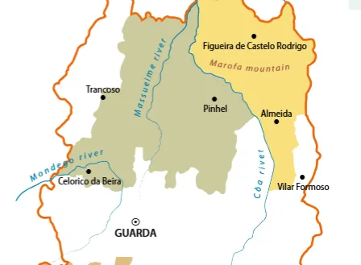
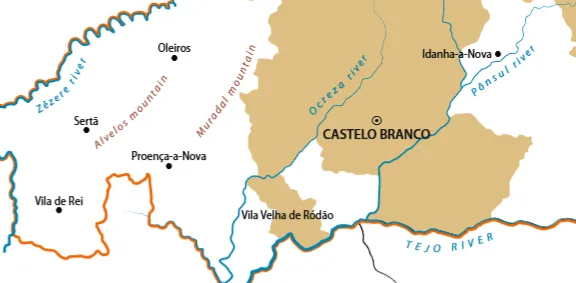
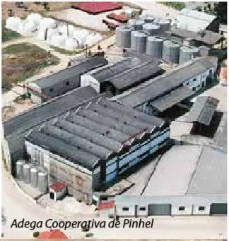
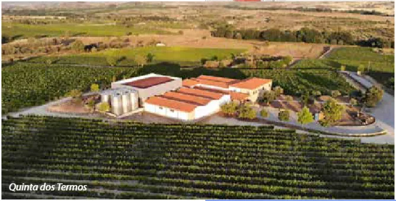
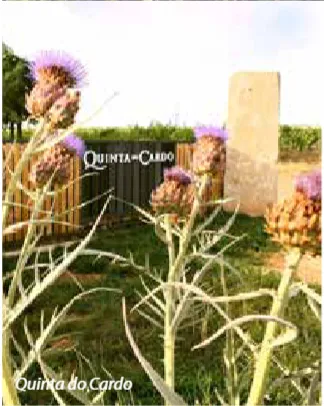

Chapter 4 · The Portuguese wine regions
Beira Interior Wine Region
Key figures (2022)
Viticultural area: 14,058 ha
Total Production: 20,201,800 litres
History
Terras da Beira was the capital of the Lusitanian people, where their King Viriathus was assassinated in AD 139 by the Romans who subsequently took possession of this land. The spoils collected point to an occupation between the first half of the 1st century A.D. and the beginning of the 5th century A.D. Very poor knowledge is documented, despite countless indications of Roman viticultural activity (Virgilio Loureiro), such as wine presses carved into the rock, conserved vine seeds from the period and amphorae that prove a Roman presence in Beira Interior. Around six hundred years later saw the emergence of the Visigoths. Both they and the Romans had strong links with viticulture. The Muslim Arabs were less interested in the cultivation of the vine. Another peculiarity of medieval wine is based on the involvement of the Church and religious orders, particularly from the 12th century onwards, in order to control the production of the “blood of Christ”. The Cistercian monks began revitalizing viticulture in the 12th century as a result of the successes of the Reconquista. The Convent of Santa Maria de Aguiar, founded by hermits in the 12th century and later integrated into the Cistercian Order, certainly played an important role in the region’s of modern technologies of controlled wine destinations, as the wine-growing fermentation, these temperatures monks must have played a decisive role in the choice of grape varieties, as some of these grape varieties, such as Marufo Folgosão, Rufete and Fonte Cal are typically of endemic origin. In the second half of the 20th century especially the rosé wines of the Beira Interior subregions of Castelo Rodrigo, Pinhel and Cova de Beira have been consistently noted for their wines of high oenological value, especially in the United States of America and the north of Europe. (adapted from the CVR Beira Interior website). In 1999, the wine region and these three subregions achieved official quality wine (VQPRD) status.
Terroir
Climate Köppen-Geiger classification:
Csb, with Csa in some neighbouring areas (Fundão) – humid temperate climate with a dry season in summer. The climate suffers from extreme mainland influences, including considerable variations in daily temperature. The summers are very short, but extremely hot and dry, while the winters are long and very cold. The climate can vary in the different subregions, depending on their constitution and geological discontinuity caused by the Serra de Estrela mountain range, at an elevation of nearly 2,000 metres. MCC System
indices (Tonietto & Carbonneau, 2004): There climate in this region varies between Castelo Rodrigo (in the north) with heliothermal index (HI): -1, cool night index (FI) +2, dryness index (DI) +1. and Cova da Beira further south, with heliothermal index (HI): +1, cool night index (FI): +1, and dryness index (DI): +1. Frosts at the end of April and thunderstorms in May accompanied by hail are weather problems in the region. The evenings are cool in the summer, and continue cold during the time of harvest and fermentation. Even before the advent
made it possible to produce fresh and aromatic mature wines. The mountains may be said to be responsible for Beira Interior’s period of great exports in the mid-20th century, since the region is surrounded by the Estrela, Marofa and Malcata mountain ranges, which have an influence on the wines as do the elevations, which vary from 400 to 700 metres. The climate of the region is very harsh, with temperatures below 0 °C. Sometimes it snows in winter and summers are very hot and dry. This combination of climatic factors results in white wines that are very aromatic, exuberant and light, and red wines filled with complex aromas of wild fruits and spices that give them a marked freshness.
Rainfall: Castelo Branco 695 mm; Pinhel 750 mm
Geology: Situated in the northern interior close to the Spanish border, in the most rugged and steeply mountainous region of mainland Portugal, the region covers the Serra da Marofa, the Serra da Gardunha and part of the Serra de Estrela mountain ranges, which convey in its wines an aroma richer and more distinct than that of wine from other regions, reminiscent of Portugal’s neighbouring country with its great wine regions within the greater region of Castile and Leon. The soils are for the most part granitic, with some schist, and sometimes, although it is less common, have a sandy component. The three subregions share much the same material characteristics, despite being separated by mountain ranges with peaks at over 1,000 metres, where the combination of poor soils, high acidity and robust maturation ensures a promising future for the region. The Cova da Beira has a number of different features, spreading as it does from the eastern foothills of the Serra da Estrela to the Tagus valley, south of Castelo Branco.
Vineyard elevation: 400–700 metres
Types of wine produced
Terras da Beira IG wine or Terras da
Beira regional wine: Red, white, rosé, sparkling, semi-sparkling.
Beira Interior DO wine (VQPRD): Red, red Palhete, red Selecção,

wine region
Região vitivinícola IG Terras da Beira DOP Beira Interior – Sub-regiões
Sub-região Castelo Rodrigo Sub-região Pinhel Sub-região Cova da Beira


r e v i r s e g r E
white, white Selecção, rosé. Beira Interior sparkling wines (VEQPRD): Red, white, rosé.

Regional contacts
Technical information: Certification
authority: Comissão Vitivinícola Regional do Beira Interior (Regional Vitivinicultural Commission of Beira Interior) Av. Cidade de Safed, Lt. 7 – 1.º, 6300-537 GUARDA, Tel.: 271 224 129, Fax: 271 223 101; e-mail: cvrbi@cvrbi.artelecom.pt,
Website: www.cvrbi.pt Cultural information on the wine
of the region: Sala Museu de Vinho (Wine Museum), 6200-165 COVILHÃ – Quinta das Poldras.
Institutions of higher learning and viticultural research:
Escola Superior Agrária do Instituto Politécnico de Castelo Branco. (“Agricultural College of the Castelo Branco Polytechnic Institute”) Quinta da Senhora de Mércules 6000-909 CASTELO BRANCO Tel.: 272 339 900,
Website: www.ipcb.pt
Certification authority: Comissão Vitivinícola Regional do Beira Interior (Regional Vitivinicultural Commission of Beira Interior), Av. Cidade de Safed – Lote 7 – 1.º, 6300-537 GUARDA Tel.: 271 224 129, Fax: 271 223 101
Website: www.cvrbi.pt, e-mail: cvrbi@cvrbi.artelecom.pt
Enotourism information: The Beira Interior Wine Route, Av. Cidade de Safed – Lote 7 – 1.º, 6300-537 GUARDA, Tel.: 271 224 129,
Website: www.cvrbi.pt
Producer and bottler information:
http://www.ivv.min-agricultura. pt/np4/1736.html, IVV Yearbook 2010/2011, p. 182.
Botany (biodiversity features) and authorised varieties
Legal basis: Ordinance n.º 104/2017 of 9 March, n.º 163/2011 of 18 April and Decree-Law n.º 212/2004 of 23 August.

Red wines: Água Santa, Alfrocheiro (Tinta Bastardinha), Alicante Bouschet, Alvarelhão (Brancelho), Aragonez (Tinta Roriz, Tempranillo), Baga, Bastardo (Graciosa), Cabernet Franc, Cabernet Sauvignon, Camarate, Campanário, Castelão, Grand Noir, Jaen (Mencia), Malvasia Preta, Marufo (Mourisco Roxo), Merlot, Monvedro, Moreto, Pilongo, Pinot Noir, Português Azul (Blauer Portugieser), Rufete (Tinta Pinheira), Syrah (Shiraz), Tinta Barroca, Tinta Carvalha, Tinta Francisca, Tinta Negra (Molar, Saborinho), Tinto Cão, Touriga Fêmea, Touriga Franca, Touriga Nacional, Trincadeira (Tinta Amarela, Trincadeira Preta), Vinhão (Sousão), Gewürztraminer and Malvasia Fina Roxa.


White wines: Alicante Branco, Alvar, Alvarinho, Arinto (Pedernã), Arinto do Interior, Azal, Barcelo, Batoca (Alvaraça), Bical (Borrado das Moscas), Cercial, Chardonnay, Chasselas, Encruzado, Fernão Pires (Maria Gomes), Folgasão, Folha de Figueira (Dona Branca), Fonte Cal, Gouveio, Loureiro, Malvasia Fina, Malvasia Rei, Pinot-Blanc, Rabo de Ovelha, Riesling, Sauvignon (Sauvignon Blanc), Semillon, Sercial (Esgana Cão), Sercialinho, Síria (Roupeiro, Códega), Tália (Ugni Blanc, Trebbiano Toscano), Tamarez (Molinha), Terrantez, Uva Cão, Verdelho, Verdial Branco, Viosinho and Vital.

Prestigious wineries
in the region: Adega Cooperativa de Pinhel, CRL
With 1,800 active members, this cooperative winery has an average grape yield of 17,000 tonnes Adega Cooperativa de Figueira de
Castelo Rodrigo currently has 800 members who collectively produce 8,500,000 kg of grapes annually. Adega Cooperativa do Fundão Quinta dos Termos Passionate investment by a highly successful entrepreneur in the textile sector in a 200-hectare family property, 60 hectares of which is devoted to vineyards and a modern, professionally run winery.
Quinta do Cardo: Some 79 of the estate’s 180 hectares are planted to organically cultivated vineyards at an average elevation of 750 metres. This aim is to achieve annual production of 500,000 bottles by 2025, which is more than double what was
achieved in 2022.
Adega 23 was born out of the passion of an ophthalmologist who wasn’t afraid to invest in the place she was born. With no experience, Manuela Carmona embarked on a daring project in the world of wine. The winery takes its name from the A-23 motorway that runs through the estate and the vineyard, and is designed to shed light on “the monumental authenticity of architecture and wine”.